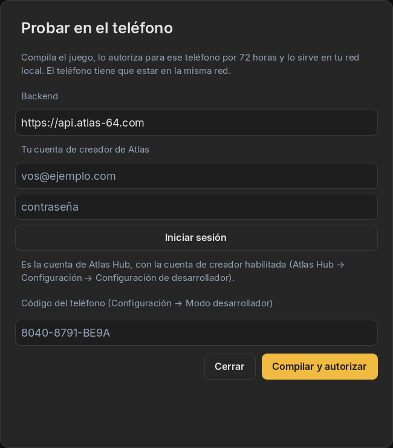

01Por qué probar en un tablero real
El Simulador te lleva muy lejos, pero hay cosas que sólo aparecen con lo real: cómo se ven los colores en una mesa con luz de día, cuánto tarda de verdad una jugada por Bluetooth, si los jugadores entienden la pantalla mientras tienen las manos ocupadas con fichas.
Probar en el teléfono instala tu juego, tal como está ahora, en tu propio teléfono, dentro de la app AtlasHub real, para que lo juegues en un Atlas 64 real. Sin tienda y sin revisión.
02Qué necesitás
- Una cuenta de Atlas Developer, habilitada como explica la guía 2.
- AtlasHub en tu teléfono, con sesión iniciada en esa misma cuenta.
- Tu PC y tu teléfono en la misma red Wi-Fi.
- Un Atlas 64 encendido y conectado a AtlasHub.
- Un juego que pase Validar Proyecto.
03Paso a paso
-
Buscá el código de tu teléfono
En AtlasHub: Configuración → Configuración de desarrollador → Modo desarrollador. Debajo de Código de este teléfono hay un código como
8040-8791-BE9A. Tocá Copiar o dejalo a la vista.Captura pendienteAtlasHub · Modo desarrollador, con el código del teléfono y el campo de la dirección del pack -
Abrí “Probar en el teléfono” en Studio
En la pestaña Panel de Control, tocá Probar en el teléfono. La primera vez, entrá con tu cuenta de creador (email y contraseña) y tocá Iniciar sesión. Dejá el campo Backend como está.

El diálogo lo explica en una línea: compila, autoriza para ese teléfono por 72 horas y lo sirve en tu red local. -
Poné el código y compilá
Escribí el código de tu teléfono en Código del teléfono y tocá Compilar y autorizar. Studio empaqueta tu juego, le pide al servidor de Atlas que autorice ese build exacto para ese teléfono y después muestra una dirección como
http://192.168.0.12:8080/paint-the-board.pck. -
Instalalo desde AtlasHub
De vuelta en Modo desarrollador, escribí esa dirección en Dirección del pack en tu PC y tocá Instalar pack. AtlasHub lo baja de tu PC, revisa la autorización y lo instala. Recuerda la última dirección que usaste.
-
Jugá
Tu juego aparece en tu biblioteca con la marca Desarrollo, y con DEV en la parte de arriba mientras jugás. La tarjeta también te dice cuánto le queda a la instalación, como “vence en 2 d 5 h”.
Cada cambio es un build nuevo, y cada build necesita su propia autorización. Tocá Compilar y autorizar otra vez y reinstalá desde AtlasHub. La dirección suele ser la misma.
04Qué es una instalación de prueba y qué no
Una instalación de prueba es una herramienta para vos, que creás el juego. Está limitada a propósito para que no se convierta en una puerta trasera a la tienda.
- Dura 72 horas. Después vence y AtlasHub la borra sola. Para seguir probando, compilá y autorizá otra vez.
- Sólo funciona en tu teléfono. La autorización está atada al código de ese teléfono, a tu cuenta y a ese build exacto. No se puede pasar a otro teléfono ni a otra persona.
- No es para compartir. El acuerdo de creador pide que no compartas ni distribuyas los builds de prueba. Para que tu juego llegue a otras personas, publicalo (guía 6).
- Vive sólo de forma temporal en tu teléfono. No aparece en la tienda ni en la biblioteca de nadie más.
- Hasta 50 autorizaciones activas por cuenta, y packs de hasta 256 MB.
- La memoria de las fichas todavía no anda en el tablero real. Si tu juego lee o escribe la memoria de las fichas sobre Atlas Core, tiene que arreglárselas sin ella.
05Sacale el jugo
Tu teléfono, tu tablero, tu mesa: es el momento de mirar a otros jugar. Podés pasarles el teléfono y las fichas a amigos sentados en tu mesa; lo que no podés es mandarles el juego.
- No expliques las reglas antes. Si la pantalla y el tablero no las explican, ese es tu próximo cambio.
- Mirá las manos, no la pantalla. Si alguien duda antes de apoyar una ficha, casi siempre es porque el tablero no dice con claridad qué se puede hacer.
- Anotá lo que te sorprendió, y convertí cada nota en un mensaje para el agente cuando vuelvas a Studio.
- Probalo en un lugar con mucha luz y con el brillo del tablero bajado desde AtlasHub.
06Si algo sale mal
| Ves | Probá esto |
|---|---|
| “Revisá que la PC y el teléfono estén en la misma red…” | El teléfono no llega a tu PC. Fijate que los dos estén en el mismo Wi-Fi (y no el teléfono con datos móviles), y evitá las redes de invitados, que suelen aislar los dispositivos. Si Windows preguntó si permitir Atlas Studio en la red, permitilo en redes privadas. |
| “La autorización venció. Volvé a autorizar el pack desde el Studio.” | Pasaron las 72 horas, o instalaste un build anterior. Tocá Compilar y autorizar de nuevo. |
| Studio dice que tu cuenta no es de creador | Habilitala en AtlasHub (guía 2) y volvé a iniciar sesión en Studio. |
| El juego se instala pero no arranca | Fijate que tu Atlas 64 esté conectado y que tengas por lo menos la cantidad mínima de módulos que pide el juego. |
| La descarga se corta a la mitad | Dejá Studio abierto, con el diálogo mostrando la dirección, hasta que AtlasHub termine de instalar: Studio es el que sirve el archivo. |